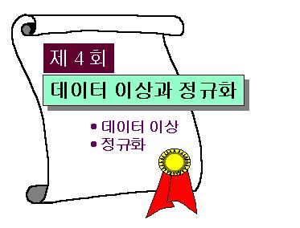

 |
||||||||||||||||||||||||||||||||||||||||
목 차
|
시작하기전에....제 4 회 "데이터 이상과 정규화" 강의는 관계형 데이터베이스의 논리적 설계의 기초를 이루는 이론적 개념과 방법론을 다룹니다. 본 강의에서 다루는 내용은 데이터의 무결성을 최소화하기 위한 릴레이션 설계 방법론을 이론적 접근으로 익혀야 하므로 다음 사항을 염두에 두면서 강의에 임하길 바랍니다.
|
|||||||||||||||||||||||||||||||||||||||
실세계의 정보는 관계형 데이터베이스에서 릴레이션들로 표현되기 때문에 데이터베이스의 릴레이션들은 실세계를 정확히 반영해야 한다. 실세계는 시간에 따라 변화하며 이러한 변화를 데이터베이스 내로 정확히 반영하기 위해 릴레이션 내의 튜플 삽입, 삭제, 갱신 등의 연산이 수시로 행해진다. 한 릴레이션 내의 다른 튜플들사이에서 같은 속성 값을 가지는 중복된 데이터들은 모두 실세계의 동일한 정보를 나타내기 때문에 실세계 정보의 변경은 이 모든 중복된 데이터값의 변경을 요구한다. 그러나, 이러한 실세계 변화에 따른 중복된 데이터 값들에 대한 변경이 일부만 행해지고 나머지 부분에 대하여 행해지지 않는다면 중복된 데이터들 간의 불일치가 발생하게 되고 이와 같은 데이터 불일치(data inconsistency)는 같은 값을 가져야 하는 데이터 값들이 서로 다르기 때문에 결국 어느 데이터 값이 실세계를 정확히 반영하는지 알 수 없게 된다. 한편, 하나의 튜플에서 이 튜플의 정보가 전체가 아닌 부분적으로 불필요하다는 이유로 릴레이션으로부터 삭제할 경우 나머지 필요한 정보마저 잃을 수도 있다. 이와 같이 릴레이션에 대한 튜플의 삽입, 삭제, 갱신 등의 연산에서 데이터베이스를 대상으로 발생되는 바람직하지 않은 이러한 문제점들을 데이터 이상(data anomaly)이라고 한다. 관계형 데이터베이스의 논리적 설계 방법 중의 하나는 정규화(normalization)라는 과정을 통하여 이 데이터이상을 차례대로 제거해 나가는 과정을 취한다. 본 강의에서는 이러한 데이터 이상에 대해 예를 들어 구체적으로 설명하도록 하고 데이터 이상이 발생되는 원인을 살펴본 후 데이터 이상의 원인을 제거하는 방법인 정규화 대하여 강의하도록 한다. 1. 데이터 이상(Data Anomaly)삽입 이상, 삭제 이상, 갱신 이상앞에서 이미 설명한 바와 같이 데이터 이상(data anomaly)이란 릴레이션에 대한 튜플의 삽입, 삭제, 갱신 등의 연산에서 데이터베이스를 대상으로 발생되는 바람직하지 않은 현상이다. 데이터 이상은 튜플의 삽입 연산, 삭제 연산, 갱신 연산으로 인해 발생되는데 이러한 연산으로 인한 이상을 각각 삽입 이상(insertion anomaly), 삭제 이상(deletion anomaly), 갱신 이상(update anomaly)이라고 하며 이들 각 이상에 대한 정의를 다음의 학생-교과목 릴레이션을 예로 들어가며 자세히 살펴보기로 한다.
1. 삽입 이상(Insertion Anomaly)위 그림 4-1의 릴레이션은 학생정보와 교과목 정보가 한 릴레이션으로 표현되어 있으며 {학번, 과목코드}는 이 릴레이션의 튜플들을 유일하게 구분시키기 때문에 주키이가 됨을 알 수 있다. 이 릴레이션에서 과목코드가 CS004인 컴퓨터구조 교과목 정보를 삽입하려고 한다고 하자. 이 교과목 정보는 학생 정보와는 별도로 존재할 수 있어야 한다. 그 이유는 일반적으로 전공에 대한 커리큘럼 상에서 볼 때 개설되지 않은 교과목도 존재하며 이 정보 또한 필요하기 때문이다. 그러나, 과목코드 CS004인 컴퓨터구조 교과목 정보를 위의 학생-교과목 릴레이션에 반영하기 위해 튜플로 구성하고자 할 때 주키이인 {학번, 과목코드}중에서 과목코드 값은 CS004로 부여할 수 있지만 학번이 결정되지 않아 주키이 값을 결정할 수 없게 된다. 주키이 값은 튜플들을 유일하게 구분하는 역할을 하기 때문에 null 값을 포함해서는 되어서는 안 된다. 따라서 주키이값이 결정되지 않기 때문에 과목코드 CS004인 컴퓨터구조 교과목 정보는 튜플로서 삽입할 수 없게 된다. 이와 같이 튜플을 릴레이션에 삽입하고자 할 때 튜플을 구성하는 정보부족 또는 미결정 등으로 인하여 삽입이 불가능하거나 데이터 무결성(data integrity)에 손상을 주는 현상을 삽입 이상(insertion anomaly)이라 한다. 2. 삭제 이상(Deletion Anomaly)그림 4-1의 릴레이션에서 '파일처리' 교과목에 대한 정보는 단 하나의 튜플로 표현되어 있음을 주시하자. 이 상태에서 '한원희' 학생이 본인의 사적인 사정으로 자퇴했다고 가정할 때 '한원희' 학생의 자퇴 사실을 릴레이션에 반영하려면 관계형 데이터베이스에서 릴레이션에서의 데이터 삽입과 삭제 연산은 튜플 단위로 행해지기 대문에 '한원희' 학생에 관련된 튜플인 (003, '한원희', '컴퓨터', 'CS005', '파일처리', '4-014')를 이 릴레이션에서 삭제해야 한다. 이 튜플은 한원희 학생에 대한 정보만 포함하는 것이 아니라 파일처리 교과목에 대한 정보도 포함하기 때문에 이 튜플의 삭제는 파일처리 교과목에 대한 유일한 정보까지 삭제시키는 문제점을 발생시킨다. 이와 같이 튜플을 릴레이션으로부터 삭제할 때 남아있어야 할 정보까지 손실됨으로써 데이터 무결성에 손상을 주는 현상을 삭제 이상(deletion anomaly)이라 한다. 3. 갱신이상(Update Anomaly)그림 4-1의 학생-교과목 릴레이션에서 강원희 학생이 컴퓨터에서 수학으로 전공을 바꾸었다고 하자. 이때 강원희와 관련하여 바꾸어야 할 전공 속성값의 수는 3 개로서 이들은 모두 '수학'으로 속성값이 바뀌어야 한다. 만일 일부만 변경되었다면 강원희에 대한 전공 속성값이 '컴퓨터'와 '수학'으로 동시에 남아 데이터 불이치가 발생되어 어느 것이 실세계를 정확히 반영하는 값인지를 알 수 없게 된다. 따라서 중복성을 갖는 데이터들의 경우 데이터를 갱신할 때에는 중복된 모든 데이터들을 찾아서 한꺼번에 동일한 값으로 갱신시켜야 하는 번거로움이 발생하게 된다. 이와 같이 하나의 릴레이션에 속성 A의 값들이 동일해야 하는 여러 튜플들이 존재하는 상황에서 이 여러 튜플 중 한 튜풀에 대한 A 속성 값의 변경시 나머지 튜플의 A 속성 값들을 새로운 값으로 변경해야 하는데도 불구하고 일부 튜플들의 속성 A값은 새로운 값으로 변경되었지만 나머지 튜플들의 속성 A 값을 변경시키지 못함으로 해서 발생되는 데이터 불일치 현상을 갱신 이상(update anomaly)이라 한다. 이상의 원인과 데이터 정규화(Data Normalization)삽입 이상, 삭제 이상, 갱신 이상 등의 데이터 이상의 원인은 궁극적으로 잘못된 릴레이션 스키마 설계에 기인한다. 앞의 예에서 삽입 이상과 삭제 이상은 서로 독립적으로 존재해야 하는 정보를 하나의 릴레이션으로 묶음으로 해서 발생된다. 앞의 예에서 '학생-교과목' 릴레이션은 학생 정보와 교과목 정보를 포함하는데 이 릴레이션에서 학생에 대한 정보와 교과목에 대한 정보를 이들간의 관련성과는 무관하게 대응시켰기 때문에 삽입하고자 하는 교과목 정보에 대한 학생 정보가 결정될 수 없으므로 삽입 이상이 발생한다. 또한 삭제 이상의 경우도 '한원희'에 대한 학생 정보만 삭제되어야 하는데 한 튜플에 학생과 교과목에 대한 두 종류의 정보가 함께 대응되어 있으므로 결국 튜플 삭제 시 함께 교과목 정보가 함께 삭제되고마는 필연적으로 발생되는 현상이다. 그러므로 위의 예에서 삽입 이상을 제거하기 위해서는 학생 정보와 교과목 정보를 서로 독립적으로 나타내도록 학생-교과목 릴레이션으로부터 분리해야 한다. 갱신 이상의 원인은 데이터의 중복성으로부터 발생됨을 알 수 있다. 데이터의 중복성을 최소화함으로써 갱신 이상을 제거하거나 최소화 할 수 있다. 데이터 정규화(data normalization)란 데이터 이상의 원인를 제거하면서 데이터베이스를 설계하는 과정을 말한다. 정규화는 릴레이션 스키마를 구성하는 속성들 사이에 존재하는 종속 관계(이를 함수적 종속성(functional dependency)라 함)를 식별하고 이를 중심으로 속성들을 재그룹화함으로써 릴레이션 스키마를 단계적으로 분할하는 과정을 취한다. 2. 함수적 종속성(Functional Dependency)함수적 종속성(functional dependency) 이란 ?
함수적 종속성의 예함수적 종속성은 두 개의 속성 집합 사이에 존재하는 종속 관계로서 여러분들의 이해를 돕기 위해 아래의 예를 들어 설명하기로 하자.
그림 4-2의 학과 릴레이션은 대학별로 소속되어 있는 학과에 대한 교수수, 학생수, 설치연도 등의 정보와 설치 후 현재 까지의 존속기간 정보를 나타내는 릴레이션으로 {대학, 학과코드}가 주키이가 된다. 실세계를 중심으로 고려한다면 이 릴레이션에 대한 릴레이션 스키마의 속성들 사이에 다음 예와 같은 관계가 존재함을 알 수 있다. 관계 예-1. 학과의 설치 후 현재까지의 기간을 나타내는 존속기간은 설치연도에 의해 유일하게 결정된다. 따라서 설치연도가 같으면 존속기간이 같음을 알 수 있다. 따라서 속성집합 {존속기간}의 속성값은 {설치연도} 속성값을 유일하게 결정한다. 관계 예-2. 일반적으로 교수수는 대학의 학과에 의해 결정되며 대학의 학과가 주어지지 않은 상태에서 교수수를 결정할 수 없다. 따라서 {대학, 학과}에 대한 속성값은 {교수수}에 대한 속성값을 유일하게 결정해 준다. 관계 예-3. 학과의 학생수도 대학의 학과에 의해 결정된다. 마찬가지로 대학의 학과가 주어지지 않으면 학생수도 결정될 수 없다. 따라서 {대학, 학과}에 대한 속성값은 {학생수}에 대한 속성값을 유일하게 결정해 준다. 앞의 관계 예-1 과 같은 관계가 존재할 때 {설치연도}의 값은 {존속기간}의 값에 의해 결정되기 때문에 이러한 결정 관계를 속성값의 의존 또는 종속 관계로 간주하여 {설치연도}는 {존속기간}에 함수적으로 종속된다(Functionally Dependent)고 말한다. 함수적 종속성 정의앞의 개념으로 볼 때 관계 예-2의 경우에서는 {교수수}는 {대학, 학과}에 함수적으로 종속되며 관계 예-3의 경우에서는 {학생수}가 {대학, 학과}에 함수적으로 종속됨을 알 수 있다. 앞의 예를 토대로 함수적 종속성(Functional Dependency)을 공식적으로 표현해보도록 하자. R을 릴레이션 스키마라하고 r은 R을 릴레이션 스키마로 갖는 릴레이션이라 하자. α와 β를 각각 속성들의 집합으로서 R의 부분집합이라 할 때 릴레이션 r에 속하는 임의의 두 튜플 t1, t2에 대하여 t1[α]=t2[α] 일 때 마다 반드시 t1[β]=t2[β] 이라면 (β 값은 α 값에 의해 유일하게 결정되므로) β는 α에 함수적으로 종속된다(Functional Dependent)고 하고 α→β로 표기한다. 좀 더 정확하게 표현하면 함수적 종속성(Functional Dependency) α→β가 릴레이션 스키마 R에 대해 성립한다(hold)고 정의한다. {A,B,....,C}→{D,E,...,F} 형태의 함수적 종속성은 앞으로 집합 괄호를 제외하고 간단히 A B .... C→D E ... F 로 표기하기로 한다. α→β가 릴레이션 r의 릴레이션 스키마 R에 대해 성립할 때 속성 α값은 속성 β값을 결정하기 때문에 릴레이션 r의 한 튜플에서 속성 α값이 변경되면 이에 따라 속성 β값도 변경되어야 한다. 만약 이러한 값의 변경이 릴레이션에 반영되진 않으면 데이터 무결성이 손상되게 된다. 앞의 관계 예-1, 관계 예-2, 관계 예-3에서 릴레이션 스키마 (대학, 학과코드, 학과, 교수수, 학생수, 설치연도, 존속기간)에 대해 성립하는 함수적 종속성은 각각 설치연도→존속기간, {대학, 학과}→교수수, {대학,학과}→학생수 등의 3개 이다. 앞의 학과 릴레이션 예에서 학과 릴레이션 스키마에 대해 성립되는 함수적 종속성은 이외에도 여러개 존재하는데 수강생 여러분들은 존재하는 모든 함수적 종속성을 식별하고 각 함수적 종속성에 대한 타당한 이유를 레포트로 작성하여 제출하도록 한다(레포트 작성 규칙을 따르기 바랍니다). 함수적 종속성의 성질함수적 종속성은 일종의 제약조건(constraint)이다. α, β, γ, δ를 각각 속성 집합이라 할 때 함수적 종속관계에 대한 몇가지 성질들을 증명없이 결과만 살펴보면 다음과 같다. 여기에서 βγ는 β∪γ를 나타내는 것으로 한다.
함수적 종속성의 역할릴레이션 스키마의 속성 집합들간에 존재하는 함수적 종속성은 릴레이션의 데이터 이상 현상을 제거하기 위한 정규화(Normalization) 과정에서 이용된다. 정규화 과정은 릴레이션 스키마를 중심으로 함수적 종속성들을 식별하고 이 종속성들을 기준으로 릴레이션 스키마가 갖추어야 할 조건들을 검사한다. 이 조건들이 만족되지 않으면 그 릴레이션 스키마를에 의해 생성된 릴레이션은 데이터 이상의 발생가능성을 가지게 되는데 이 가능성을 제거하기 위해 해당 릴레이션 스키마는 주어진 조건들이 만족되도록 두 개 이상의 릴레이션 스키마로 분해되어야 하는데 이 때에도 함수적 종속성이 이용된다. 3. 정규화와 정규형정규화와 릴레이션 스키마 분해
정규화(Normalization)정규화란 앞에서 언급한 것처럼 릴레이션을 대상으로 삽입 이상, 삭제 이상, 갱신 이상 등의 데이터 이상을 없애는 과정을 말한다. 정규화 과정은 몇가지 단계를 거치게 된다. 각 단계별마다 릴레이션 스키마가 함수적 종속성을 포함하는 종속 관계에 의해 만족해야 할 기준 또는 상태들이 부여되는데 이와 같은 단계별 기준 또는 상태를 정규형(Normal Form)이라 하며 정규형의 종류를 릴레이션 스키마가 만족해야 할 조건 단계별로 나열하면 다음과 같다.
위의 정규형들에서 릴레이션 스키마가 갖추어야 할 조건들이 나열된 순서대로 더욱 더 강화된다. 예를 들면 한 릴레이션 스키마가 제 3 정규형에 있게 되려면 제 2 정규형의 조건을 만족해야 하고 이 조건외의 부여된 다른 조건도 만족해야 한다. 정규화는 주어진 릴레이션 스키마를 대상으로 제 1 정규형에서부터 출발하여 제 2 정규형, 제 3 정규형, Boyce-Codd 정규형, 제 4 정규형, 제 5 정규형 등을 차례대로 거치면서 행해진다. 릴레이션 스키마 분해(Relation Schema Decomposition)앞에서 나열한 정규형 별로 정규화 과정을 거치면서 각 정규형 단계에서 만족해야 할 조건들을 릴레이션 스키마가 갖추지 못하게 되면 이 릴레이션 스키마에 의해 생성된 릴레이션은 데이터 이상 현상이 발생할 가능성이 존재하기 때문에 그 릴레이션 스키마는 부여된 조건들을 만족하는 두 개 이상의 릴레이션 스키마들로 분해되어야 한다. 그러나 릴레이션 스키마를 해당 정규형을 만족하는 두 개 이상의 릴레이션 스키마들로 분해 할 때 반드시 다음 조건들이 만족되어야 한다. 1. 무손실 분해(Lossless Decomposition) 릴레이션 스키마가 분해 될 때 결국 분해 이전의 릴레이션 스키마에 의해 생성된 릴레이션이 가지는 데이터 정보가 분해 이후의 릴레이션 스키마들에 의해 생성된 릴레이션들로 분산되는데 이때 데이터 정보 손실이 없어야 한다. 결국 분해 이후의 릴레이션 스키마들에 의해 생성된 릴레이션들을 대상으로 죠인(join)이라는 연산(수강생 여러분들은 아직 학습하지 않은 연산으로 강의 제 6 회에서 자세히 설명될 예정이다)에 의해 분해 이전의 릴레이션을 생성할 수 있어야 한다. 릴레이션 스키마 R을 함수적 종속성을 고려하여 다음의 두 함수적 종속성 조건이 모두 만족되도록 한다면 릴레이션 스키마 R은 두 개의 릴레이션 스키마 R1과 R2는 무손실 분해된 것이다. 2. 종속 관계 보존(Dependency Preservation) 함수적 종속성 α→β에서 α 속성값이 변경될 때 β 속성값도 α 속성값에 따라 변경되어야 한다. 릴레이션 스키마가 분해될 때 함수적 종속성도 분해 이후의 릴레이션 스키마들로 분산 되기 때문에 분산된 상태에서 이 종속성 관계가 보존되어야 한다. 정규형(Normalization)
제 1 정규형(The First Normal Form : 1st NF, 1NF)제 1 정규형의 조건 릴레이션 스키마의 모든 속성의 도메인이 원자성(atomicity)(도메인에 속하는 모든 값들이 더 이상 분리될 수 없는 성질)을 가질 때 그 릴레이션 스키마는 제 1 정규형에 존재한다고 한다. 제 1정규형이 아닌 릴레이션의 예
그림 4-3은 학생 정보와 그 학생이 수강하고 있는 교과목 정보를 포함하는 학생-교과목 릴레이션이며 이 릴레이션은 학번, 이름, 전공, 학년, 교과목의 속성을 갖는다. . 이 릴레이션 스키마의 교과목 속성은 과목코드와 과목명의 두 개의 속성으로 이루어지며 따라서 교과목 속성 값은 과목코드 값과 과목명 값으로 분리되므로 교과목 속성 도메인은 원자성을 가질 수 없다. 위의 릴레이션에서 교과목 속성 값은 과목코드 속성과 과목명 속성으로 이루어진 릴레이션 튜플들의 그룹들로 이루어지는데 이러한 그룹을 반복 그룹(repeating group)이라 한다. 학생-교과목 릴레이션 스키마의 모든 속성들이 원자성 도메인을 갖도록 하기위해 교과목 속성을 과목코드 속성과 과목명 속성으로 명시화하고 학생정보를 반복해서 대응시킨 다음 릴레이션을 고려해보자.
그림 4-4의 릴레이션은 데이터 이상 현상이 발생하는데 그 내용은 다음과 같다.
무손실 분해반복 그룹으로 인하여 제 1 정규형에 있지 않는 릴레이션 스키마는 앞의 '수정된 학생-교과목 릴레이션 예'와 같이 교과목 속성을 과목코드 속성과 과목명 속성으로 명시화하고 원래의 교과목 속성값에 대하여 학생정보를 반복해서 대응시키기 보다는 데이터 이상을 보다 줄이기 위해 무손실 분해하는 것이 좋다. 무손실 분해할 때에는 분해된 릴레이션 스키마들 중의 하나가 반복그룹에 대한 속성들을 포함하도록 고려한다. 학생-교과목 릴레이션 스키마에서 성립하는 함수적 종속성들의 일부를 고려하면 다음과 같다. 학번→이름 학번→전공 학번→학년 학번→교과목 학생-교과목 릴레이션 스키마에서 학번 속성은 주키이이기 때문에 위의 함수적 종속성 관계는 사실 상 당연한 것이다. 학생-교과목 릴레이션 스키마 (학번, 이름, 전공, 학년, 교과목)을 두 릴레이션 스키마인 (학번, 이름, 전공, 학년)과 (학번, 교과목)으로 분할 한다면 무손실 분해의 두가지 조건은 반사 규칙과 합 규칙에 의해 다음과 같이 만족된다. (학번, 이름, 전공, 학년)과 (학번, 과목코드, 과목명) 의 공통 속성은 학번 속성이고, 학번→ {학번, 이름, 전공, 학년}이 성립되고(조건-1을 만족시킴) 학번→{학번, 교과목}이 성립된다(조건-2를 만족시킴). 이 두 릴레이션 스키마에 의해 분해된 릴레이션들은 다음과 같다.
그림 4-5의 학생 릴레이션 스키마는 제 1 정규형에 있게 되지만 교과목 릴레이션 스키마는 교과목 속성 도메인이 여전히 원자성을 갖지 못하기 때문에 제 1 정규형에 있지 못하다. 교과목 릴레이션 스키마를 제 1 정규형에 있도록 하기 위해 교과목 속성을 과목코드 속성과 과목명 속성으로 명시화하고 학번 속성값을 반복 대응시키면 다음과 같다.
그림 4-6의 학생 릴레이션 스키마는 물론 수정된 교과목 릴레이션 스키마는 모두 제 1 정규형에 있게 된다. 그림4-4의 수정된 학생-교과목 릴레이션 스키마와 비교해 볼 때 무손실 분해를 통하여 학생 릴레이션 스키마는 데이터 이상을 제거했고 교과목 릴레이션은 데이터 중복성을 훨씬 줄였음을 알 수 있다. 제 2 정규형(The Second Normal Form : 2nd NF, 2NF)그림 4-6의 교과목 릴레이션 스키마는 제 1 정규형에 있지만 다음과 같은 데이터 이상이 발생한다. 삽입이상 : 교과목 정보만 새로 추가할 경우 수강하는 학생정보 중 학번의 내용을 알수 없어 삽입이 불가능하다({학번, 과목코드}가 이 릴레이션의 주키이이기 때문에 주키이 값을 정할 수 없게 된다) 위의 데이터 이상 현상을 제거하기 위해 제 2 정규형 조건이 제시된다. 완전 함수적 종속성과 부분 함수적 종속성 함수적 종속성 α→β에서 α로부터 임의의 속성 A를 제거하면 함수적 종속성 α→β가 성립되지 않는다면, 즉 임의의 속성 A ∈ α에 대해서 (α - {A})→β가 성립되지 않는다면 이 함수적 종속성 α→β를 완전 함수적 종속성(fully functional dependency)이라 부른다. 함수적 종속성 α→β에서 α로부터 몇몇 속성을 제거하더라도 함수적 종속성 α→β가 성립된다면, 즉 몇몇 γ⊆α에 대해서 (α-γ)→β가 성립된다면 이 함수적 종속성 α→β를 부분 함수적 종속성(partially functional dependency)이라 부른다. 제 2 정규형의 조건 릴레이션 스키마가 제 1 정규형이고 주키이가 아닌 모든 속성이 주키이에 완전 함수적 종속이면 이 릴레이션 스키마는 제 2 정규형에 존재한다고 한다. 제 2 정규형이 아닌 릴레이션의 예그림 4-6의 교과목 릴레이션은 제 1 정규형에 있으며 이 릴레이션의 주키이는 {학번,과목코드}이다.이 릴레이션에서 주키이가 아닌 속성은 과목명이며 함수적 종속성 {학번,과목코드}→{과목명}이 교과목 릴레이션 스키마에 대해 성립함을 알 수 있다. 이 함수적 종속성은 완전 함수적 종속성이 아니기 때문에 교과목 릴레이션 스키마는 제 2 정규형에 존재할 수 없다. (수강생 여러분들은 함수적 종속성 {학번,과목코드}→{과목명}이 완전 함수종속성이 아닌 부분 함수적 종속성임을 보이는 레포트를 작성하여 E-mail을 이용하여 보내기 바랍니다.) 무손실 분해 그림 4-6의 교과목 릴레이션 스키마는 완전 함수적 종속성이 성립하는 릴레이션 스키마들로 분해한다면 데이터 이상을 제거하거나 줄일 수 있다. 따라서, 교과목 릴레이션 스키마 (학번,과목코드,과목명)을 수강 릴레이션 스키마인 (학번,과목코드)와 수정된 교과목 릴레이션 스키마인 (과목코드,과목명)로 분해한다면 각 릴레이션 스키마의 속성들은 모두 주키이에 완전 함수적 종속이기 때문에 두 릴레이션 스키마는 제 2 정규형에 있게 된다. 교과목 릴레이션 스키마를 수강 릴레이션 스키마인 (학번,과목코드)와 과목 릴레이션 스키마인 (과목코드,과목명)으로 무손실 분해 후의 릴레이션들은 다음의 그림 4-7과 같다.
위의 그림 4-7의 두 릴레이션은 앞의 제 1 정규형의 데이터 이상 예에서의 삽입 이상, 삭제 이상, 갱신이상 모두를 제거했음을 알 수 있다. 제 1 정규형의 데이터 이상 예에서 삽입 이상의 경우 과목코드→과목명 이므로 과목코드 값을 결정하여 그림 4-7의 과목 릴레이션에 삽입하면 삽입이상이 제거되며, 삭제이상의 경우 학번 003인 학생이 파일처리 교과목을 철회하면 그림 4-7의 수강 릴레이션으로부터 (003, 'CS005')를 삭제하더라도 파일처리 교과목에 대한 정보는 그림 4-7의 과목 릴레이션에 그대로 남게되므로 삭제이상도 제거된다. 마지막으로 갱신이상에서 'CS002' 코드의 대응 교과목이 'OS'에서 '자료구조'로 변경된다면 과목 릴레이션에서 (CS002, 'OS') 튜플의 과목명 속성값을 '자료구조'로 단순히 변경함으로써 해결된다. 제 3정규형(The Third Normal Form : 3rd NF, 3NF)다음 학생이 소속된 전공에 대한 정보를 갖는 다음 그림 4-8의 소속전공 릴레이션을 고려하자.
그림 4-8의 소속전공 릴레이션 스키마의 주키이는 학번 속성이고 학번→전공, 학번→전공주임(함수적 종속성 학번→전공이 성립하고 함수적 종속성 전공→전공주임이 성립하므로 함수적 종속성의 전이 규칙에 의해함수적 종속성 학번→전공주임이 성립한다)은 모두 완전 함수 종속성이므로 제 2 정규형에 있지만 다음과 같은 데이터 이상이 발생한다.
위의 데이터 이상 현상을 제거하기 위해 제 3정규형 조건이 제시된다. 전이 종속성(Transitive Dependency) 함수적 종속성 α→β가 성립하고 β→γ가 성립하여 전이규칙에 의해 설립되는 함수적 종속성 α→γ를 전이 종속성(transitive relation)이라한다. 전이종속성을 그림으로 쉽게 나타내면 다음 그림 4-9와 같다.
제 3 정규형의 조건 릴레이션 스키마가 제 2정규형이고 주키이가 아닌 모든 속성이 주키이에 전이종속 종속이지 않으면 이 릴레이션은 제 3 정규형에 존재한다고 한다. 제 3 정규형이 아닌 릴레이션의 예그림 4-8의 소속전공 릴레이션 스키마는 앞에서 설명한 것처럼 제 2 정규형에 있지만 주키이에 대한 함수적 종속성 학번→전공주임은 전이종속성이므로 제 3 정규형이 될 수 없다. 무손실분해그림 4-8의 소속전공 릴레이션은 전이종속성을 따로 분리하여 별도의 릴레이션 스키마를 형성함으로써 무손실 분해될 수 있다. 따라서 소속전공 릴레이션 스키마 (학번,전공,전공주임)을 학생소속 릴레이션 스키마 (학번,전공)과 전공 릴레이션 스키마 (전공,전공주임)로 무손실 분해할 수 있다. 이 두 릴레이션 스키마는 각각 주키이에대해 전이종속성을 갖는 속성이 존재하지 않으므로 각각 제 3 정규형에 있게된다. 무손실 분해된 릴레이션들이 아래 그림 4-10에 제시된다.
그림 4-10의 무손실 분해는 제 2 정규형의 데이터 이상 예의 데이터 이상들을 제거시킨다. 제 2 정규형의 데이터 이상 예에서 삽입이상, 삭제이상, 갱신이상이 어떻게 제거되는지를 보이는 레포트를 작성하여 E-mail로 전송하기 바랍니다. 제 3 정규형과 정규화제 3 정규형도 데이터 이상이 발생한다. 그러나 대부분 응용의 경우 각 릴레이션 스키마가 제 3 정규형에 있으면 이 릴레이션 스키마를 바탕으로 생성된 릴레이션에서 발생되는 데이터 이상은 빈도수가 매우 적기 때문에 이 상태에서 정규화를 통한 설계를 종료한다. 제 3 정규형 상태에서 정규화를 종료하는 또하나의 주된 이유는 성능 관계 때문이다. 데이터 이상이 생길 때 마다 수행하는 무손실 분해는 분해된 릴레이션들 모두를 대상으로하는 데이터 연산(사실상 죠인 연산을 말하는데 죠인 연산은 제 6 회 강의에서 언급됩니다)은 무손실분해 이전의 한 릴레이션을 대상으로하는 연산보다 성능면에서 훨씬 저하된다. 그러나 데이터 이상으로 인하여 심각한 정보 손실을 비롯한 데이터 무결성 손상을 초래한다면 후속적인 정규화 단계를 거쳐야 한다. Boyce-Codd 정규형(Boyce-Codd Normal Form : BCNF)강의 릴레이션 스키마가 주어질 때 이 릴레이션 스키마 상에서 성립되는 모든 함수적 종속성들이 다음과 같다고 하자. {학번, 전공과목}→{담당교수} {학번, 전공과목}→{학번} {학번, 전공과목}→{전공과목} {담당교수}→{전공과목} 위의 함수적 종속성들을 갖는 강의 릴레이션 스키마 상에서 생성된 릴레이션의 예가 다음 그림 4-11의 강의 릴레이션에서 제시된다.
그림 4-11의 강의 릴레이션에서 005번 학생은 '컴파일러', '컴퓨터과학' 두 과목을 수강하고 컴퓨터과학 수강과목은 과목명은 같더라도 이상철 교수와 이길홍 교수 두사람에 의해 진행되는 다른 강좌가 존재함을 주시하자. 이 강의 릴레이션 스키마의 주키이를 {학번,전공과목}으로 한다면 이 릴레이션 스키마는 제 2 정규형에 존재하며, 전이 종속성이 존재하지 않으므로 제 3 정규형에 있게 된다. 그러나 이 강의 릴레이션에서도 다음과 같은 데이터 이상이 발생한다.
Boyce-Codd 정규형의 조건 릴레이션 스키마 상에서 성립하는 임의의 함수적 종속성 α→β에 대하여 α⊆β이거나 혹은 α가 이 릴레이션 스키마의 수퍼키이라면 이 릴레이션 스키마는 BCNF(Boyce-Codd Normal Form)에 존재한다고 한다. 제 3 정규형에 있는 릴레이션 스키마들은 대부분 BCNF에 존재한다. 그러나 앞의 예에서처럼 제 3 정규형에 있는 모든 릴레이션 스키마가 BCNF에 존재하는 것은 아니다. BCNF에 존재하는 모든 릴레이션 스키마는 제 3 정규형에 존재한다. 이에 대한 구체적인 증명은 본 강의 핵심이 아니므로 생략하도록 한다. 그러나, BCNF에 존재하는 모든 릴레이션 스키마는 제 3 정규형에 존재한다는 사실을 꼭 명심하길 바랍니다. Boyce-Codd 정규형이 아닌 릴레이션의 예그림 4-11의 강의 릴레이션 스키마는 이미 언급한 것처럼 제 3 정규형에 있지만 이 릴레이션 스키마 상에서 성립하는 함수적 종속성 {담당교수}→{전공과목}에서 {전공과목}은 {담당과목}의 부분집합도 아니면서 수퍼키이도 아니다. 따라서 BCNF 정의에 위배되므로 이 릴레이션 스키마는 BCNF에 존재하지 않는다. 무손실 분해4-11의 강의 릴레이션 스키마는 BCNF 조건에 위반되는 함수적 종속성 {담당교수}→{전공과목} 때문에 발생하므로 {담당교수}→{전공과목}이 BCNF조건에 합당하도록 강의 릴레이션 스키마를 분해할 필요가 있다. 이 방침에 따라 강의 릴레이션 스키마 (학번,전공과목,담당교수)를 수강 릴레이션 스키마 (학번,담당교수)와 교수전공 릴레이션 스키마 (담당교수,전공과목)로 무손실분해할 수 있다. 이렇게 분해된 두 릴레이션 스키마를 갖는 릴레이션들은 다음 그림 4-12와 같다.
그림 4-12의 수강 릴레이션과 교수전공 릴레이션은 각각 BCNF에 존재하며 제 3 정규형의 데이터 이상 예에서 설명한 데이터 이상은 다음과 같이 제거된다.
제 4 정규형(The Fourth Normal Form : 4th NF, 4NF)다치종속성(Multivalued Dependency) 릴레이션 스키마 R에서 α⊆R 이고 β⊆R 이라 하자. R을 릴레이션 스키마로하는 임의의 릴레이션 r에서 t1[α]=t2[α]를 만족하는 두 개의 튜플 t1과 t2가 존재할 때 t1[α]=t2[α]=t3[α]=t4[α] t3[β]=t1[β] t3[R-β]=t2[R-β] t4[β]=t2[β] t4[R-β]=t1[R-β] 을 만족하는 튜플 t3와 t4도 반드시 릴레이션 r에 존재한다면 다치종속성(multivalued dependency) α→→β가 성립한다. 이때 α는 β를 다중결정 (multidetemine)한다고 말한다. α→→β이 릴레이션 스키마 R 상에서 생성된 모든 릴레이션 r에 대해 성립할 때 α→→β를 단순다치종속성(trivial multivalued dependency)이라 한다. 그러므로 β⊆α이거나 혹은 β∪α=R이면 α→→β를 단순다치종속성이다. 일반적으로, 다치 종속성은 주어진 릴레이션이 최소한 3개의 속성을 갖고, 그 중 2개가 다중값 속성이고, 그 값들이 세 번째 속성에만 종속될 때 존재한다. 즉, 다치 종속성은 릴레이션R(A, B, C)에서 A가 B의 다중값을 결정하고, A가 C의 다중값을 결정하며, B와 C가 서로 독립적일 떄 존재한다. BCNF의 데이터 이상다치종속성 학번→→전공, 학번→→취미가 성립하는 릴레이션 스키마를 갖는 다음 그림 4-13의 학생 릴레이션을 고려하자.
위의 그림 4-13의 학생 릴레이션은 학생, 전공, 취미 사이의 관계를 보여주고 있다. 학생이 여러 전공을 취할 수 있고 여러 취미를 가질 수 있다고 가정하면, 이 릴레이션의 유일한 주키이는 {학번, 전공, 취미}가 된다. 학번이 001인 학생은 '컴퓨터과학'과 '물리학'을 전공하고 있고 '독서'와 '수영'의 취미를 가지고 있다. 002번 학생은 '통계학'을 전공하고 있고 '테니스'만 취미로 하고 있다. 학번 속성과 전공 속성과의 관계는 학생은 여러개의 전공을 가질 수 있으므로 함수 종속은 아니다. 단일 학번의 값은 많은 전공을 가질 수 있고 학번과 취미 간의 관계도 마찬가지이다. 그림 4-13의 학생 릴레이션은 학번→→전공과 학번→→취미의 다치종속성을 만족한다. 이 릴레이션은 모든 속성이 조합되어 주키이가 되므로 3NF(제 3 정규형)에 존재하고, 전이종속성이 없으므로 3NF(제 3 정규형)에 존재하며, BCNF에 존재한다. 그러나, 강의 릴레이션은 다음과 같은 데이터이상이 발생한다.
제 4 정규형의 조건릴레이션 스키마 R에서 α⊆R 이고 β⊆R 이라 하자. α→→β 형태의 모든 다치종속성에 대하여 α→→β가 단순다치종속성 이거나 혹은 α가 릴레이션 스키마 R에 대한 수퍼키이라면 릴레이션 스키마 R은 제 4 정규형에 존재한다. 제 4 정규형이 아닌 릴레이션의 예그림 4-15의 학생 릴레이션 스키마는 3ND와 BCNF에 존재함을 알 수 있다. 그러나 이 릴레이션 스키마는 다치종속성들 학번→→전공, 학번→→취미 각각이 단순다치종속성도 아닌 동시에 학번 속성이 수퍼키이도 아니기 때문에 제 4 정규형에 존재하지 않는다. 무손실분해그림 4-15의 학생 릴레이션 스키마에서 데이터이상을 제거하려면 다치종속성을 제거하여야 한다. 강의 릴레이션 스키마 (학번,전공,취미)는 오직 하나의 다중값 속성만을 포함하는 두개의 릴레이션 스키마 (학번,전공), (학번,취미)로 무손실분해함으로써 다치종속성이 제거될 수 있다. 이 결과 만들어진 릴레이션에서는 이상 현상이 발생하지 않는다. 다치종속성 제거를 위해 무손실분해된 릴레이션들은 아래의 그림 4-16에 제시된다.
위의 학생전공 릴레이션 스키마와 학생취미 릴레이션 스키마는 제 4 정규형에 존재하며 BCNF의 데이터 이상 예에서의 데이터 이상이 제거된다. 수강생 여러분들은 데이터 이상이 어떻게 제거되었는 지를 설명한 레포트를 작성하여 E-mail로 보내기 바랍니다. 제 5 정규형(The Fifth Normal Form : 5th NF, 5NF)제 5 정규형은 조인종속성(join dependency;JD)의 개념에서 출발하는데 조인종속성을 설명하려면 여러분들에게 관계대수(relational algebra)의 선택(selection) 연산, 프로젝션(projection) 연산, 자연죠인(national join) 연산 등에 대한 먼저 소개가 선행되어야 한다. 그러나 이들 연산에 대해서는 제 6 회에서 자세하게 소개될 예정이며 앞에서 언급했듯이 관계형 데이터베이스 설계시 릴레이션 스키마가 제 3 정규형에 존재하게되면 그 릴레이션 스키마 설계는 대부분 바람직한 것으로 간주하며 사실 BCNF, 4NF, 5NF에 존재하지 않음으로 인한 데이터이상은 매우 특수한 경우 아니고는 빈번히 발생하지 않는다. 이러한 이유 때문에 제 5 정규형에 대한 자세한 내용은 본 강의에서 다루지 않도록 한다. 이점에 대하여 수강생 여러분들의 양해를 구한다. 주어진 릴레이션 스키마가 5NF 라면 후보 키가 모든 조인종속성을 알고 있어야 한다. 그러나 모든 조인 종속성을 찾아내는 일은 간단하지 않다. 함수적 종속성, 다치종속성을 결정하는 일은 현실 세계를 설명하는 것이기 때문에 비교적 쉬운 반면에 조인 종속성을 결정하는 일은 그렇게 쉽지 않다. 그러므로 주어진 릴레이션 스키마가 제 4 정규형이나 제 5 정규형에 존재하지 않는지를 결정하는 작업은 불명확하다. 이러한 제 5 정규형에 존재하는 릴레이션 스키마는 특수한 경우이고, 실제로 관계 데이터베이스 설계시에 잘 나타나지 않을 수도 이다. 결론적으로 지금까지 연구된 바에 의하면, 프로젝션과 조인을 고려한 제 5 정규형이 거의 최종적인 정규형이라고 할 수 있다 정규형들간의 포함관계지금까지 논의된 정규형들간의 포함 관계가 다음 그림 4-17에서 제시된다.
위의 그림 4-17에서 안쪽 타원에 해당하는 정규형은 바깥 타원의 정규형을 기본으로 만족시키면서 바깥 타원보다 더 강한 제약조건이 부여됨을 나타내고 있다
|
||||||||||||||||||||||||||||||||||||||||